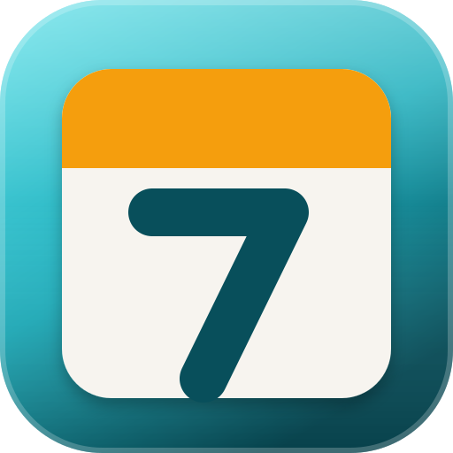
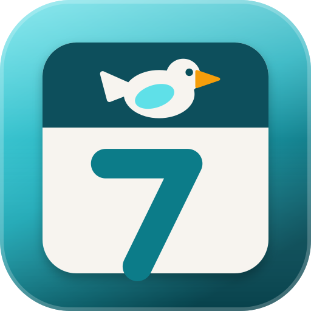
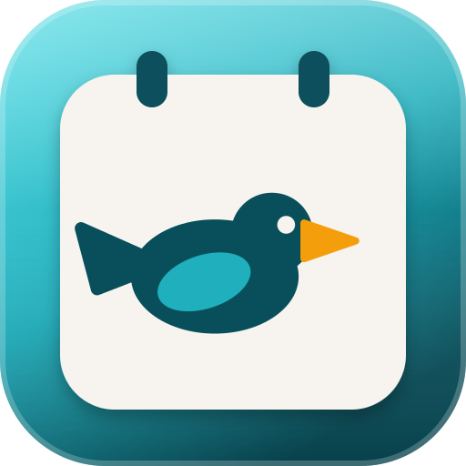
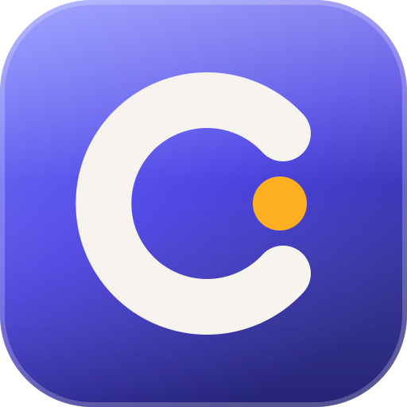
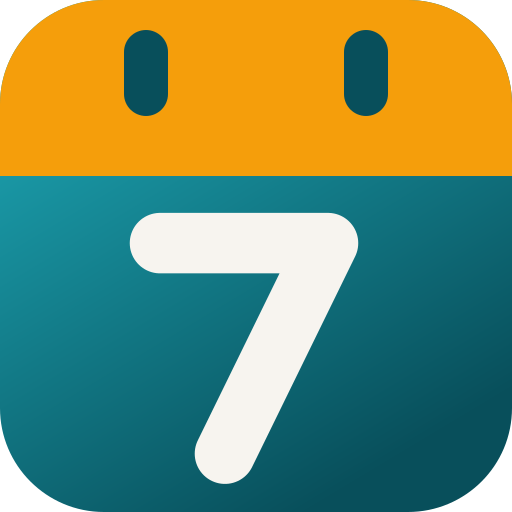
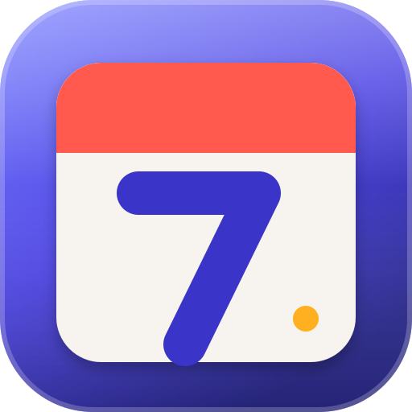

Cada tarjeta: opción grande, 48/32/24/16 px sobre barra de tareas oscura y clara, y fila de Dock de macOS con iconos genéricos de referencia. La tarjeta 00 es el icono actual.
Icono vigente: hoja aguamarina con pájaro fino. Exceso de detalle y bajo contraste a tamaños pequeños.
Aguamarina
Imita la jerarquía de Apple Calendar: el número es ~60% de la hoja; a 16px sobreviven banda y 7, y basta.
Aguamarina + ámbar

Mascota en la banda como sello de marca (silueta de 3 formas) y el 7 mantiene la lectura de calendario.
Aguamarina + ámbar

Máxima personalidad: una silueta oscura sobre marfil (contraste >10:1) ocupa ~70% del lienzo; solo las anillas dicen "calendario".
Aguamarina + ámbar

Arco + punto: sobrevive a 16px y destaca en el Dock; el punto ámbar evoca "hoy". Pierde la metáfora literal de calendario.
Índigo + ámbar

Estilo Fluent sin sombras: capas desplazadas dan profundidad en plano; el glifo llena ~90% del lienzo, como Outlook.
Aguamarina + ámbar
El tick comunica "agenda al día" con un solo trazo; paleta índigo/coral de alto contraste que rompe con el verde-azulado del resto de apps.
Índigo + coral
Silueta marfil sobre aguamarina intenso: buen contraste en barra oscura y clara; la banda ámbar delata "calendario" aun a 16px.
Aguamarina + ámbar
Ocupa el 100% del lienzo con 3 zonas de color; contraste máximo (marfil sobre petróleo) y la banda ámbar es una firma reconocible.
Aguamarina + ámbar

Mensaje claro con un solo trazo grueso; menos distintivo que el número, pero muy limpio y legible a 16px.
Aguamarina + ámbar
Paleta alternativa de alto contraste, diferenciada de Calendar (rojo) y Outlook (azul); pierde el vínculo cromático con Parrita Labs.
Índigo + coral
